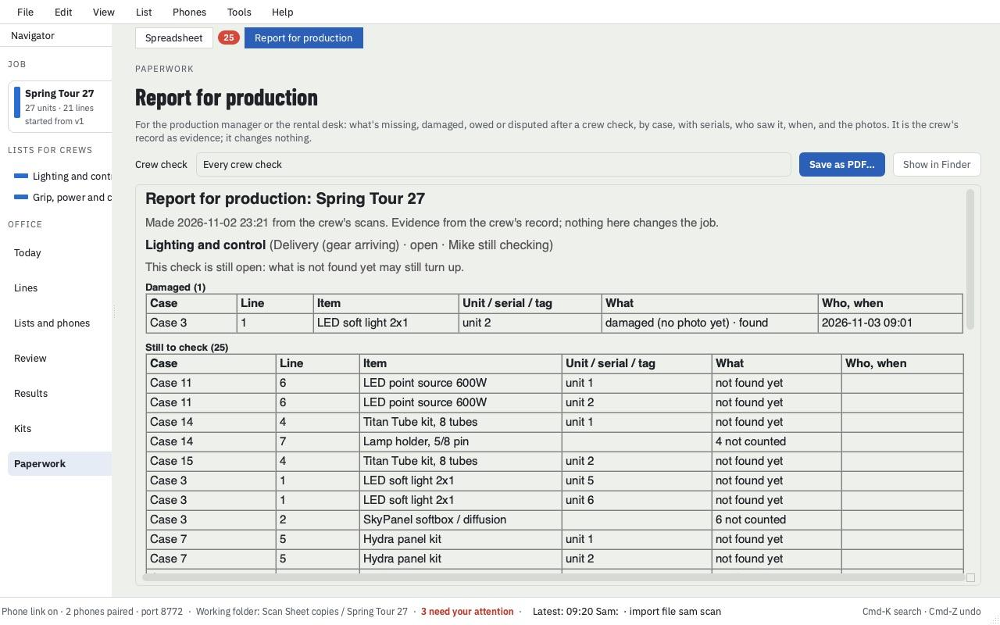
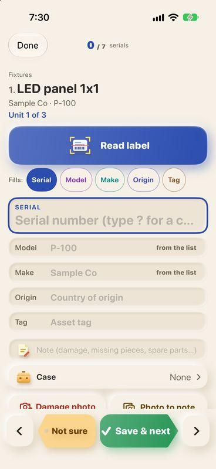
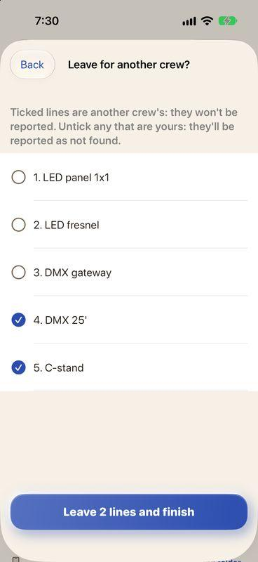
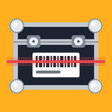

How a check runs
From the list to the report in four cues
The office brings in the equipment list, hands each crew their part, and gets the answers back.
Import the list
Open the rental list or manifest spreadsheet. Scan Office reads the columns and shows you its guesses to confirm.
Send each crew a list
Pick the cases or lines for each crew. Phones on the same Wi-Fi pair with a 6-digit code, or get the list by email.
Tick, count, scan
Count by case, scan barcodes, read serials off labels. Flag what's damaged, back-ordered or not sure.
Review and report
See what needs a person, then save the report for production: what's missing and damaged, case by case.



Made for the load-in
What it does today
Everything here is in the 1.35 beta. Nothing on this page is a promise of a future feature.
Two apps, one check
Phone on the dock. Mac in the office.

Scan Sheet
For each crew member. Get a list, check it, send it back. Installed through Apple's TestFlight during the beta.
iPhone
Scan Office
For whoever runs the job. Import lists, hand them out, review the results, save the report.
Mac with Apple silicon (M1 or later), macOS 14 or newer
Does not run on Intel Macs.
In development Lohrbook LiDAR (iPhone): scan a room with your phone's LiDAR and get the raw data for AI, CAD or Blender. Not on the App Store yet. Its privacy page.
Beta testers wanted
Try it on your next check-in
Free until March 2, 2027. Spots are limited, so testers are added by hand. Email paultlohr@gmail.com and you'll get an iPhone invite and the Mac download.